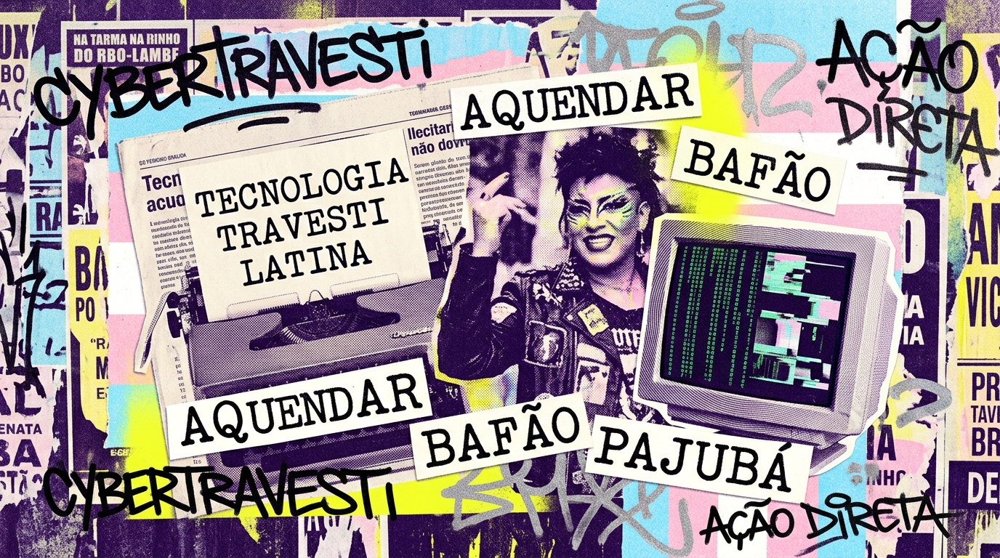

Pajubá is not slang; it is an Afro-Brazilian sociolect of resistance born on the streets, woven from Yoruba and Bantu linguistic roots, forged by travestis and trans folk to survive state repression.

In Fuxico, every button, error message, and telemetry log carries authentic cultural vocabulary:
| Term in Pajubá | Technical Meaning | Cultural Context |
|---|---|---|
| Aquendar | Lock, secure, cipher, encrypt | Originated from looking closely, guarding secrets, or concealing something from hostile eyes. In Fuxico, "Aquendar fofoca" generates a high-entropy secret 16-character slug. |
| Desaquendar | Burn, evaporate, delete, destroy | To reveal and immediately dispose of, undoing the hold. In Fuxico, "Desaquenda" triggers the oneshot burn-after-download mechanism. |
| Fuxico / Fuxicar | Gossip, word-of-mouth file share | Popular Brazilian term for passing gossip from mouth to ear. In Fuxico, it celebrates passing information along edge networks without gatekeepers. |
| Bafão / Babado | Juicy payload, substantial upload | A major event, intense piece of news, or heavy payload. In CLI telemetry: [fux] espalhando o bafão: dump.sql (14 MB). |
| Ficha | Management Token (X-Token) | The registry token that grants ownership and control over an uploaded file or shortened URL. |
| Caducar | Expire, retention timeout | To become void due to time. When a file expires in Fuxico, the metadata and disk file are purged atomically: "Essa fofoca já prescreveu." |
| Caladinho | Quiet mode (--caladinho) |
Silent operation. Suppresses all stderr deboche and prints only the clean URL for pipe automation. |
| Queima de Arquivo | Oneshot self-destruction | Underground phrase for destroying incriminating records before authorities arrive. Erases the file from disk upon completion of HTTP streaming. |
Brazil has been the deadliest country in the world for trans and travesti people for 16 consecutive years. In response, travesti communities developed mutual aid networks, street survival protocols, and cryptographic languages long before tech corporations colonized the word "encryption".
Building Fuxico with this identity is not cosmetic branding; it is a statement of political refusal against sterile Silicon Valley corporatism:
We do not trust mega-cloud providers with our memories, documents, or confessions. Self-hosting with single files, zero external databases, and direct static downloads restores digital sovereignty to the streets.
Deboche is a weapon of the marginalized. When the system is absurd and oppressive, wit and sarcasm on stderr keep our humanity alive while the machine executes instructions cleanly.